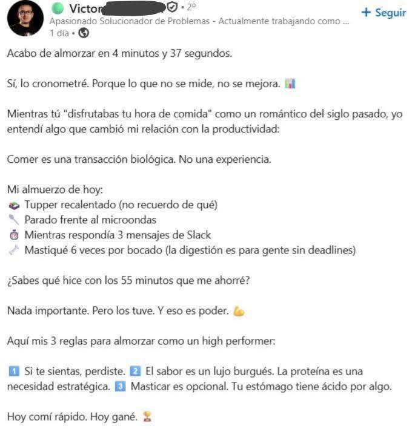

Han pasado rápido los meses. Antes se me hacían eternidades las semanas, esperando al martes. Ahora cada vez que se acerca el fin de semana digo "¿ya pasó la semana?" Todavía no me acostumbro y todas las semanas observo lo mismo.
Se acerca nuestro año. Ha pasado tanto desde la última vez que te escribí, reconozco mi ausencia. La distancia hacía que te escribiera más, especialmente cuando recién salíamos semanalmente. Ahora te converso todos los días en aquella camita tan sabrosa para los dos. No estoy quejándome, sí, pues muy pocas relaciones tienen acceso a este privilegio, y no a todas les sienta bien verse diariamente, y menos mal que somos la excepción - me gusta creer. Nuestra cercanía es un regalo que hay que saber aprovechar bien. Después de todo te irás pronto, cariño. A Santiago. Hay que aprovechar cada vez que podamos, pues de siete días, quizá nos veamos tres como mucho. Y no es el cuento de un futuro distante pues ya ves cómo pasa el tiempo.
Hablando de la brevedad del tiempo, para mí actualmente son semanas, pero para los más viejos son los años. Me aterraría pensar en que se me fuera la vida así. Quizá ya te haya hablado de ello, pero cómo cuesta hacer que cada día cuente. En lo que leas, en lo que creas, consumas, vivas, pienses. Cómo te levantes en la mañana, cómo decidas tomar tu día desde que recuperas la consciencia del sueño hasta perderla en la noche. Hoy me levanté e hice lo que hago antes de ir a trabajar, a primer minuto: ducharme, limpiarme los dientes, afeitarme la barba. Suelo levantarme y estudiar lo antes posible. Como soldado sin armadura, corazón sin arterias. La producción de mi existencia suele preceder su alma misma. Hice lo contrario el día de hoy. Encendí velas, velando por el cuidado de nuestra relación, mi paz, la salud de nuestra familia y cercanos. Se siente distinta la vida. Cómo no olvidarme de este sentir que te quiero compartir, y que mi voluntad no se distraiga por la producción sino su cuidado en este mundo. Se exige tanto, se descarta tanto.

¿Cómo me cuantifico el alma? 4 de junioDe las pocas cosas que no siento culpa es al estudiar. Hay un temor del cual creo ya haberte hablado, del sentir que no hago suficiente para sentirme más que persona. Como en Soul, que la vimos hace poco. Puedo estar vivo, mis funciones vitales en orden, noche dormido mañana despierto. Todavía desconozco lo que me apasiona, y si supiera qué es, incógnita permanece si puedo pagar el arriendo de ello. Creo que siendo más joven, en la adolescencia, pasaba por lo mismo pero en analogía de jardín. Escribiendo me acabo de acordar. Un jardín bonito quería yo. Revolvía mis analogías alrededor de jardínes y la pureza de una vida tranquila, con una voluntad resuelta por saber qué quiero, qué no, y el poder de ejercer ambos. Esta analogía proviene de los mismos temores de incertidumbre por los que el color blanco era mi favorito, un color de paz. Pero quizá ya no lo es ahora, me está gustando más ahora el verde. A ti el rojo. Somos Mario y Luigi. También el morado me gusta, pensándolo. Mis cuatro colores sin orden en particular son el blanco, el rojo, el verde y el morado. Pero soy mañoso con los colores: el morado lo quiero claro, el rojo lo quiero profundamente oscuro, el verde me gusta ambos claro como oscuro, pero más oscuro. Y el blanco lo quiero blanco. A ti te quiero tal cual.